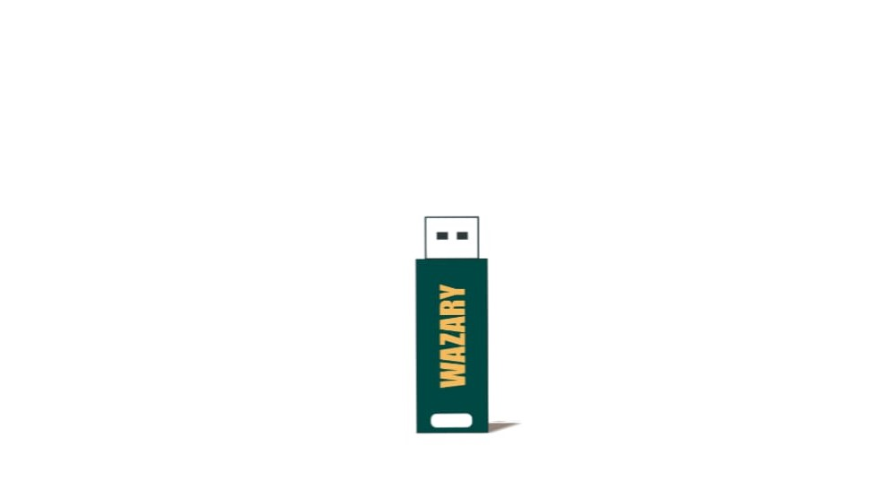

Beranda / Tentang Kami
Kenalan dulu sebelum percaya laptop kesayanganmu ke kami.
Tentang kami
Kami adalah bisnis jasa instalasi software dan sistem operasi yang membantu kamu yang kesulitan menginstal software atau OS sendiri. Kami juga melayani troubleshooting kalau software atau drivermu bermasalah.
Nama Wazary adalah gabungan nama kami bertiga — Waviq, Zacky, dan Aryan. Ide jasa ini lahir dari riset kecil: ternyata masih banyak orang yang belum bisa melakukan instalasi software atau sistem operasi. Jadi kami hadir untuk mempermudah urusan itu.
Misi kami sederhana: bikin urusan software kamu beres tanpa drama — cepat, rapi, harga jujur.

Kontak
Pilih cara yang paling nyaman — kami fast respon.
Lokasi
Ceritakan kebutuhanmu — install ulang, tambah software, atau sekadar tanya-tanya. Gratis.